Research & Engagement Highlights 2026
Expanding the Frontiers of Autonomous Flight and Industry Collaboration
O Week at Macquarie University

Industry Acceleration & Innovation

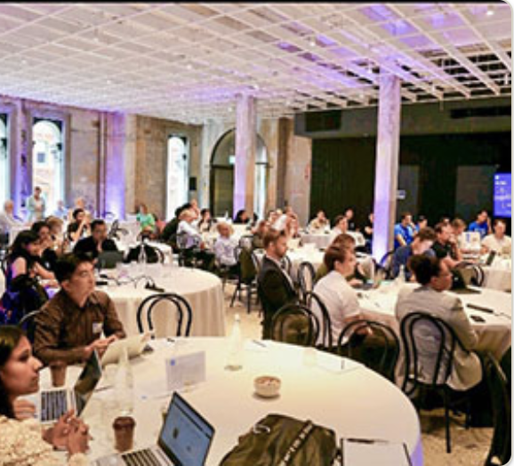
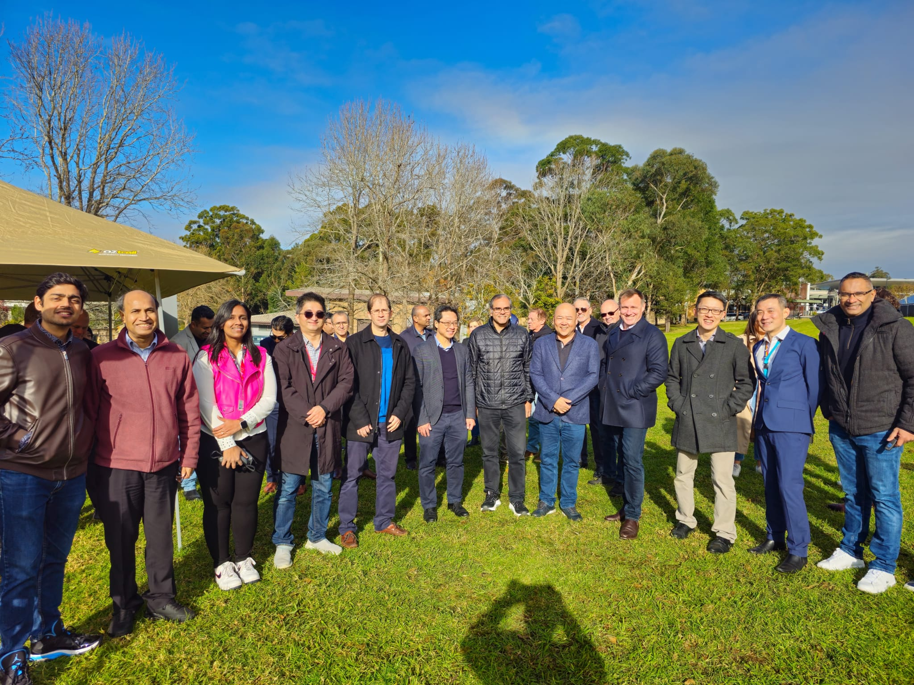
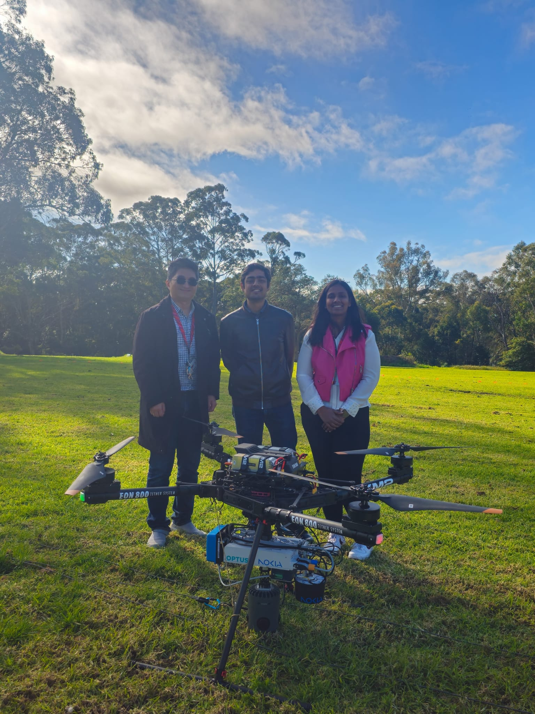
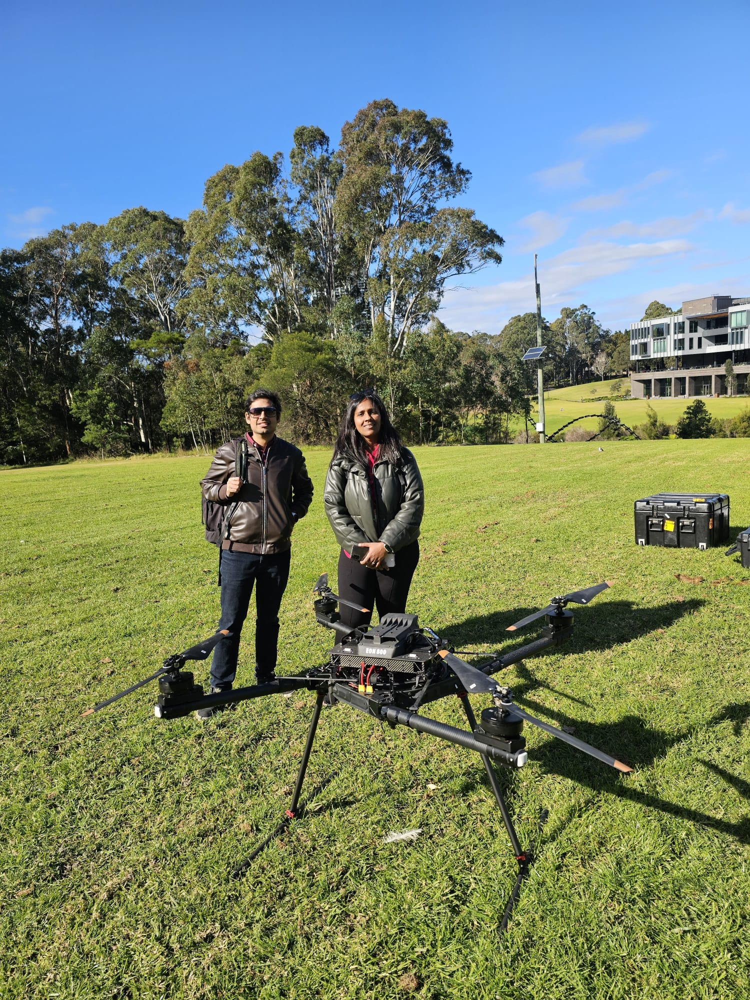
Our journey in 2026 began with the CSIRO ON Accelerator program, where we worked alongside Australia’s leading innovators to translate aerial robotics research into commercial reality. This experience culminated in high level collaborations with Nokia and XM2, focusing on the integration of 5G connectivity with swarm drone logistics to solve complex industrial challenges.
ADSRC Flight Facilities & Testing Grounds
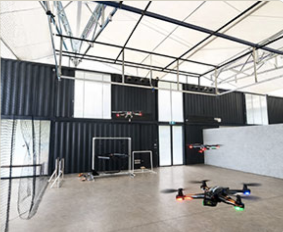
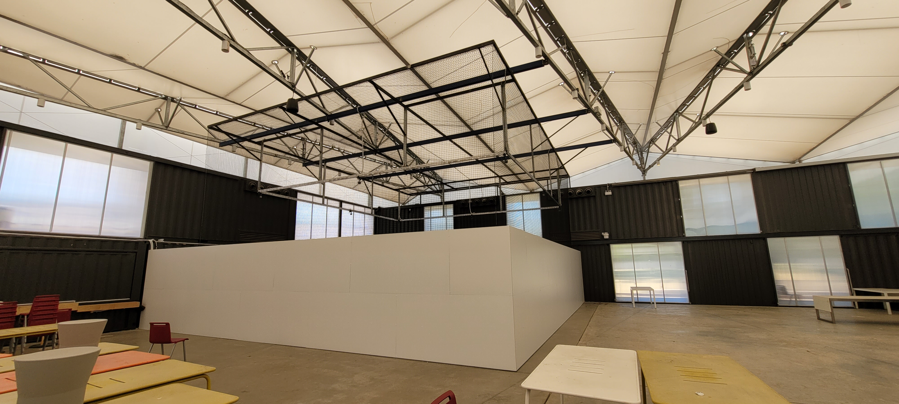
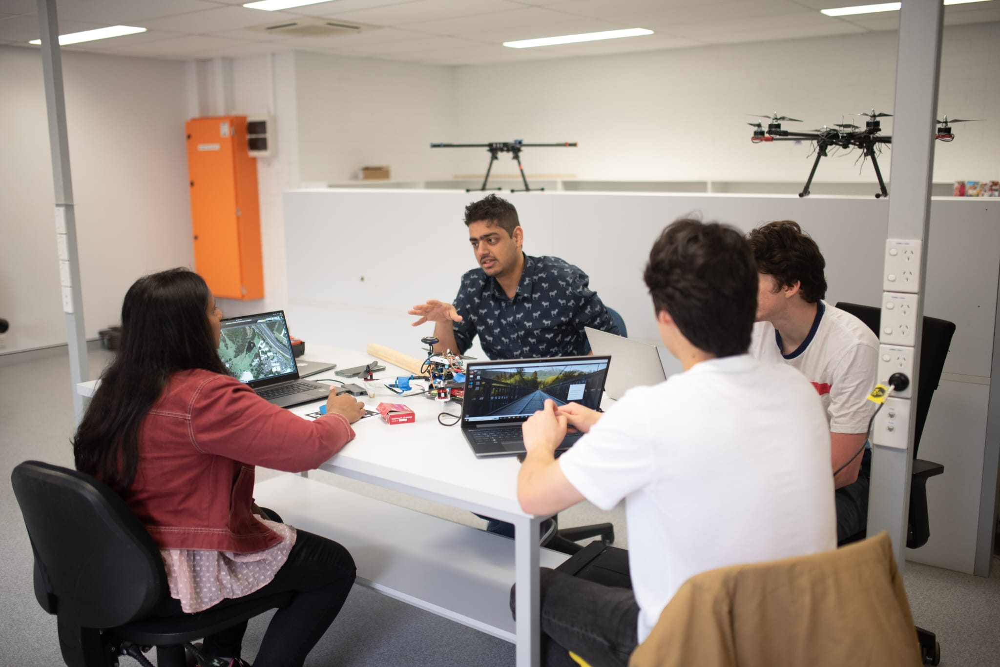
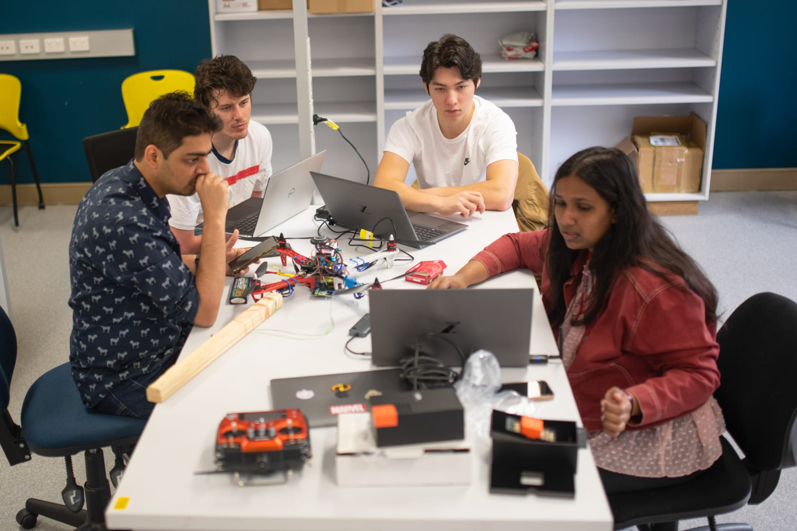
Validation is the heartbeat of our research. We have significantly expanded the Advanced Drone Systems Research Centre (ADSRC) flight facilities, providing a dedicated indoor arena for high precision testing. These spaces allow us to iterate on vision based landing and swarm coordination in a controlled environment before moving to the unpredictable conditions of field deployment.
Community & Computing Showcases
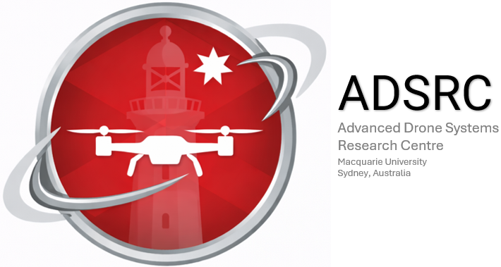
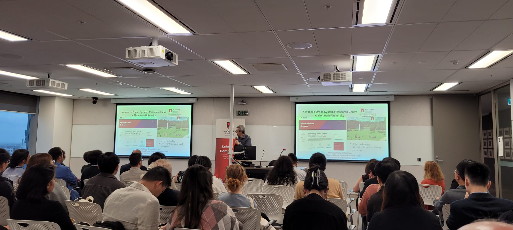
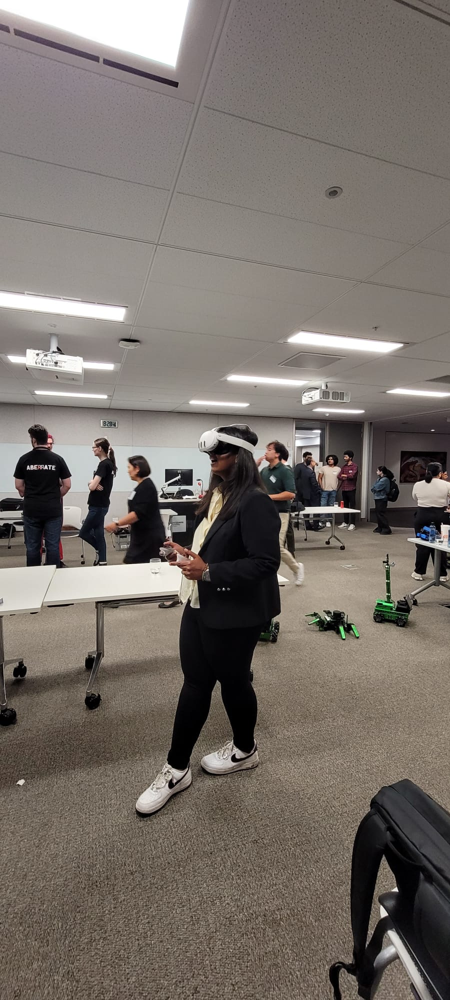
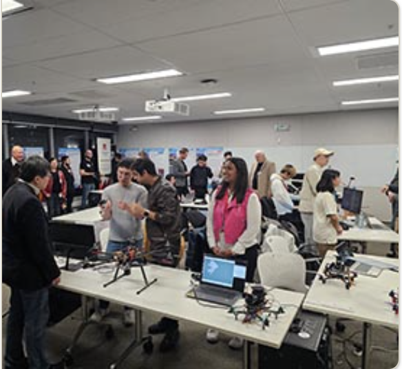
The MQ Computing Showcase remains a vital platform for connecting our research with the broader academic and student community. Under the new ADSRC identity, we continue to bridge the gap between rigorous software engineering and physical mechatronic systems, inspiring students to build the autonomous future they want to see.